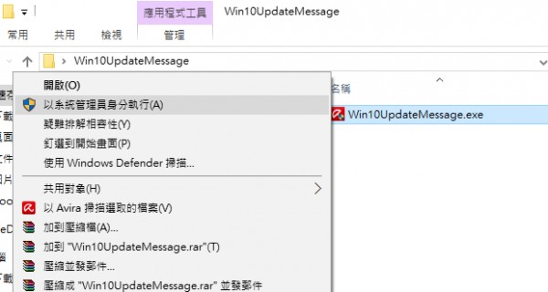

無法多機互連
1 個回答
您好
站長猜測可能您的電腦是win10 ,有上網自動更新了作業系統,新的微軟更新必須要加入防火牆清單,站長寫了一個程序
1.請下載這個小程序
http://ico.tw/advpos/Addfirewall.exe
2.請用以系統管理員身分執行(重要)滑鼠右鍵

請在主機執行
請測試看看,結果如何也煩請告知一下站長
您好
站長猜測可能您的電腦是win10 ,有上網自動更新了作業系統,新的微軟更新必須要加入防火牆清單,站長寫了一個程序
1.請下載這個小程序
http://ico.tw/advpos/Addfirewall.exe
2.請用以系統管理員身分執行(重要)滑鼠右鍵

請在主機執行
請測試看看,結果如何也煩請告知一下站長